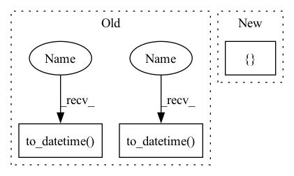

Pattern ID :1159

Before Change
assert len(out) == 3
pd.testing.assert_frame_equal(pd.DataFrame({
"time": pd.to_datetime(["2001-01-01", "2001-01-02", "2001-01-03"]),
"a": [1, 2, 3],
"b": [9, 8, 7],
}), out[0])
pd.testing.assert_frame_equal(pd.DataFrame({
"time": pd.to_datetime(["2001-01-04", "2001-01-05", "2001-01-06"]),
"a": [4, 5, 6],
"b": [6, 5, 4],
}), out[1])
After Change
def test_segment_by_time():
The sequence is cut in sequences of the indicated time lenght.
sequence = pd.DataFrame({
"a": [1, 2, 3, 4, 5, 6, 7, 8, 9],
"b": [9, 8, 7, 6, 5, 4, 3, 2, 1],
})
sequence_index = pd.date_range(start="2001-01-01", periods=9, freq="1d").to_series()
segment_size = pd.to_timedelta("3d")
In pattern: SUPERPATTERN
Frequency: 3
Non-data size: 3
Instances
Fragment ID: 5854909
Project Name: sdv-dev/deepecho
Commit Name: 273eb990d35e8c573f4cce8b30ebe339e9030725
Time: 2020-08-13
Author: carles@pythiac.com
File Name: tests/test_sequences.py
M Class Name: AnonimousClass
N Class Name: AnonimousClass
M Method Name: test_segment_by_time(0)
N Method Name: test_segment_by_time(0)
M Parent Class:
N Parent Class:
M File Name: tests/test_sequences.py
N File Name: tests/test_sequences.py
M Start Line: 36
M End Line: 59
N Start Line: 36
N End Line: 43
'>
Before Change
wl = pd.read_feather(wl_fname)
spm = pd.read_feather(spm_fname)
wl.index = pd.to_datetime(wl.pop("index"))
spm.index = pd.to_datetime(spm.pop("index"))
return wl[st:en], spm[st:en]
def fetch(self,
After Change
spm.to_xarray().to_netcdf(spm_fname)
else:
wl = xr.load_dataset(wl_fname).to_dataframe(["index"])
spm = xr.load_dataset(spm_fname).to_dataframe(["index"])
//wl.index = pd.to_datetime(wl.pop("index"))
//spm.index = pd.to_datetime(spm.pop("index"))
'>
Fragment ID: 5854908
Project Name: atrcheema/dl4seq
Commit Name: 010fbe51c1ccf4305e1811558e8e0e2123274ac4
Time: 2021-08-30
Author: ather_abbas786@yahoo.com
File Name: ai4water/utils/datasets/datasets.py
M Class Name: MtropicsLaos
N Class Name: MtropicsLaos
M Method Name: fetch_hydro(3)
N Method Name: fetch_hydro(3)
M Parent Class: Datasets
N Parent Class: Datasets
M File Name: ai4water/utils/datasets/datasets.py
N File Name: ai4water/utils/datasets/datasets.py
M Start Line: 1017
M End Line: 1052
N Start Line: 1036
N End Line: 1070
'>
Before Change
assert len(out) == 3
pd.testing.assert_frame_equal(pd.DataFrame({
"time": pd.to_datetime(["2001-01-01", "2001-01-02", "2001-01-03"]),
"a": [1, 2, 3],
"b": [9, 8, 7],
}), out[0])
pd.testing.assert_frame_equal(pd.DataFrame({
"time": pd.to_datetime(["2001-01-04", "2001-01-05", "2001-01-06"]),
"a": [4, 5, 6],
"b": [6, 5, 4],
}), out[1])
pd.testing.assert_frame_equal(pd.DataFrame({
"time": pd.to_datetime(["2001-01-07", "2001-01-08", "2001-01-09"]),
"a": [7, 8, 9],
"b": [3, 2, 1],
}), out[2])
After Change
def test_segment_by_time():
The sequence is cut in sequences of the indicated time lenght.
sequence = pd.DataFrame({
"a": [1, 2, 3, 4, 5, 6, 7, 8, 9],
"b": [9, 8, 7, 6, 5, 4, 3, 2, 1],
})
sequence_index = pd.date_range(start="2001-01-01", periods=9, freq="1d").to_series()
segment_size = pd.to_timedelta("3d")
'>
Fragment ID: 5854911
Project Name: sdv-dev/deepecho
Commit Name: 273eb990d35e8c573f4cce8b30ebe339e9030725
Time: 2020-08-13
Author: carles@pythiac.com
File Name: tests/test_sequences.py
M Class Name: AnonimousClass
N Class Name: AnonimousClass
M Method Name: test_segment_by_time(0)
N Method Name: test_segment_by_time(0)
M Parent Class:
N Parent Class:
M File Name: tests/test_sequences.py
N File Name: tests/test_sequences.py
M Start Line: 36
M End Line: 59
N Start Line: 36
N End Line: 43